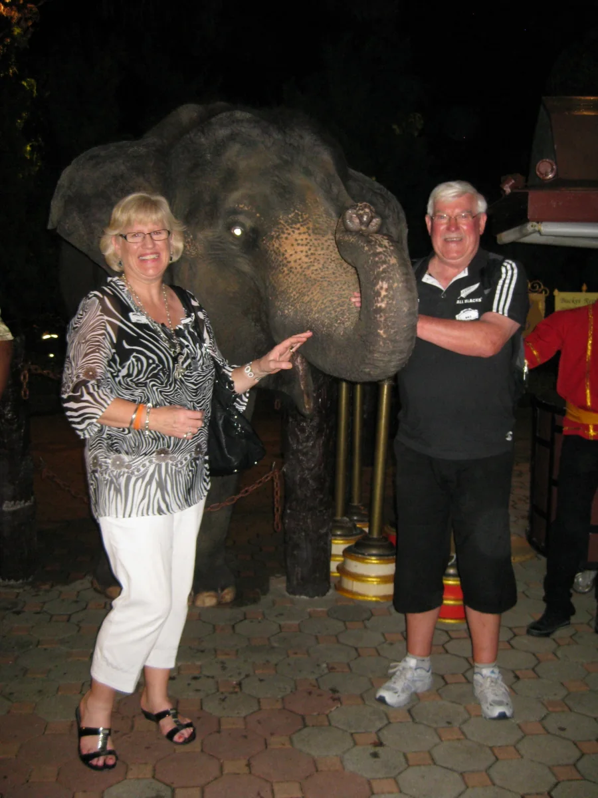
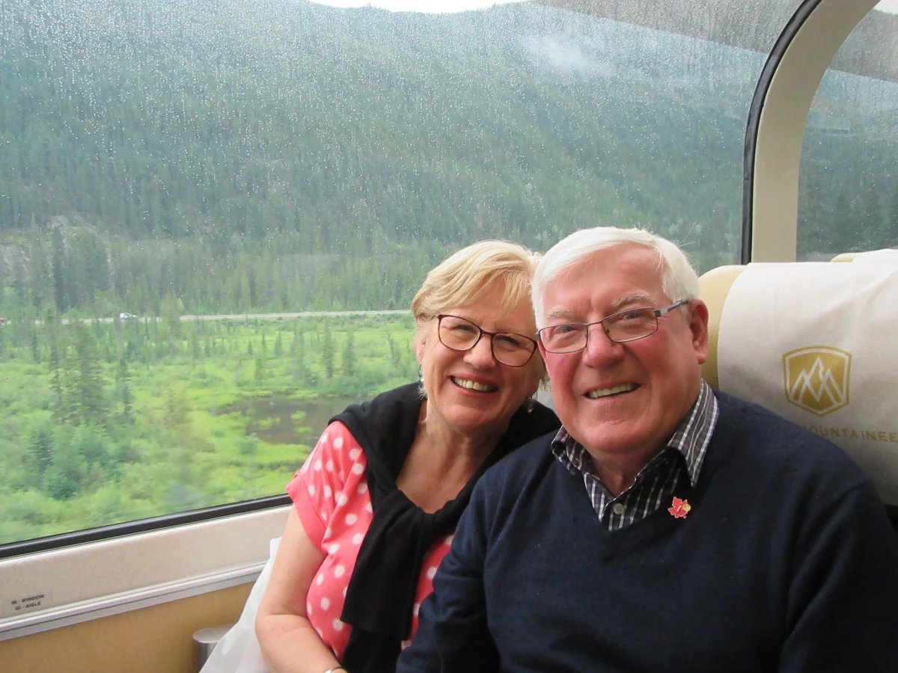
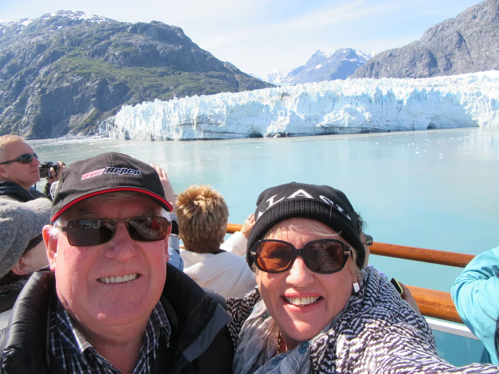
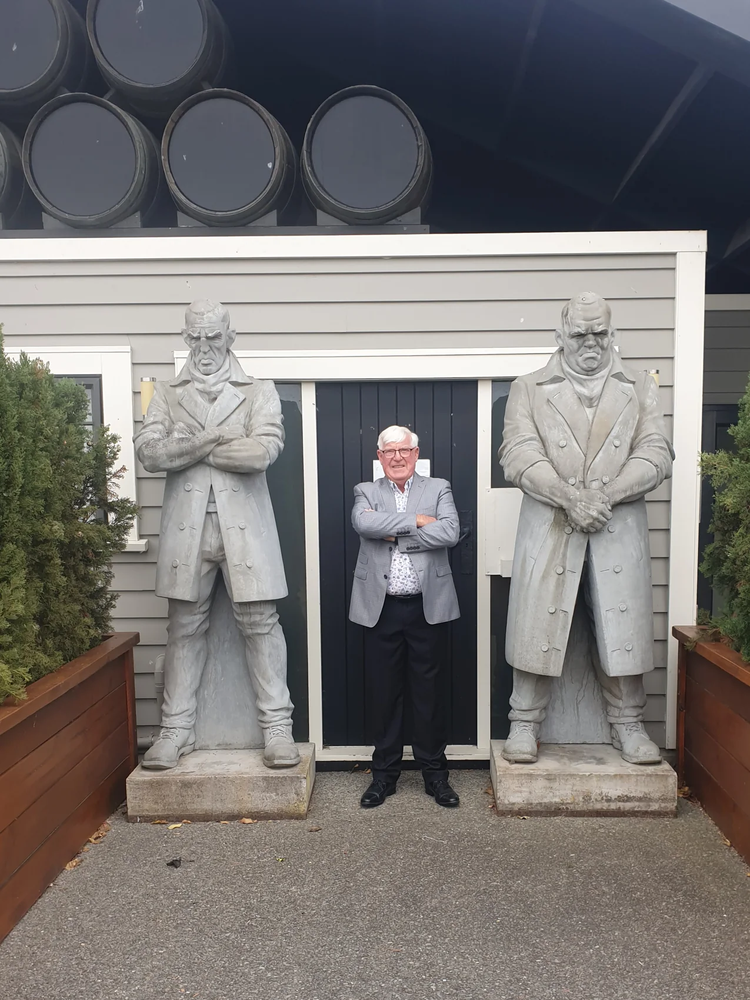
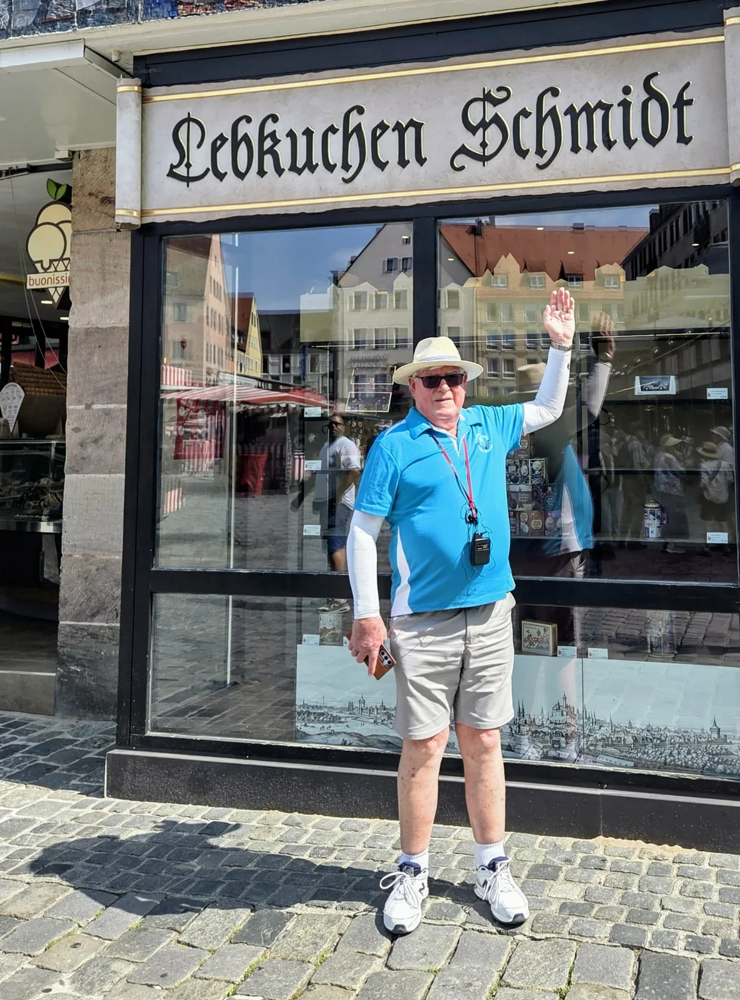

Work trips, family journeys, local discoveries and a very good reason to keep the camera close.
The longer journey
The destination changes. The company matters.
Australia at 20, work travel through Australia, Hawaii, the United States, Fiji, Germany,
Hong Kong, China and Thailand — then cruises, road trips, rail journeys, glaciers and castles.
The map is wide, but the recurring feature is the person beside Colin. More often than not,
that is Ally — with Laura, Mike, family and good friends joining the story along the way.
1971 · First big step
Across the Tasman at 20
Colin headed to Australia as a young man, living first in Sydney and then Brisbane before
returning to Wellington at the end of 1971. It was the first of many journeys connected to work,
people and the next opportunity.

Colin and Ally in Thailand · 2012.A family stop at Queenstown’s Minus 5° Ice Bar · 5 May 2013.
2014–16 · North America
Railways, mountains and ice
North America brought the Rocky Mountaineer and Alaska: big landscapes, good company and
the sort of photographs that become shorthand for an entire trip.

Aboard the Rocky Mountaineer · 2016.

Colin and Ally with an Alaskan glacier · 2016.
2016–24 · Closer to home
New Zealand keeps delivering
Kāpiti Island supplied a cheeky kākā, Stewart Island supplied fish and chips with Mike,
and 2024 brought both Farewell Spit and a 35th wedding-anniversary visit to Martinborough.
The best trips did not always require a passport.
A cheeky local on Kāpiti Island · 6 May 2016.Fish and chips with Mike at the Kai Kart, Stewart Island · 2019.Colin and Ally at Farewell Spit · May 2024.

Colin celebrating his and Ally’s 35th wedding anniversary in Martinborough, 25 February 2024.
2025 · Europe by river
Castles, cities and Viking Gymir
A European river journey added another chapter: days beside old towns and castles,
life aboard Viking Gymir, and more evidence that Colin and Ally remain very good travelling company.
Colin beside Viking Gymir during the 2025 European journey.

Colin on tour in Germany during the 2025 European journey.